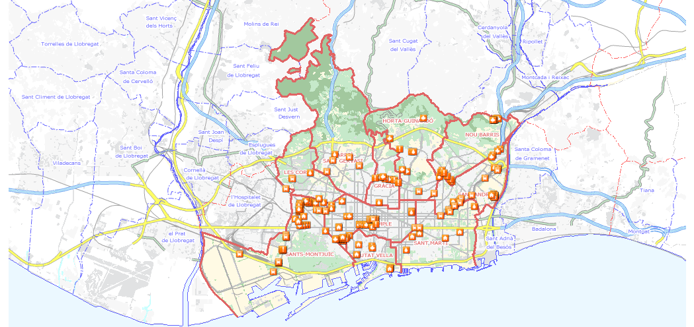

- CAT
- CAS


- Infraestructuras del transporte
Ejecución de la estación de la L9 del metro a la Ronda Litoral con la calle 24, en el Parque Logístico (temporalmente parada) - Infraestructuras del transporte
Obras de conexión viaducto - pozo de ataque de la L9 en la calle A de la Zona Franca. (Temporalmente PARADA) - Infraestructuras del transporte
Obras de ejecución de estación Motors de la L9, entre el paseo de la Zona Franca y la calle Motors - Infraestructuras del transporte
Obras de ejecución de estación Motors de la L9, entre el paseo de la Zona Franca y la calle Motors - Infraestructuras del transporte
Obras de ejecución de estación Motors de la L9, entre el paseo de la Zona Franca y la calle Motors - Infraestructuras del transporte
Ejecución de la estación de la L9 del metro en el paseo de la Zona Franca con calle Foc (temporalmente parada) - Infraestructuras del transporte
Ejecución de la estación de la L9 del metro en el paseo de la Zona Franca con calle Foc (temporalmente parada) - Infraestructuras del transporte
Ejecución de la estación de la L9 del metro en el paseo de la Zona Franca con calle Foc (temporalmente parada)
Otros
Cala de comprobación de servicios en el paseo de la Zona Franca con la calle Foc, en el marco de las obras de la estación de Foc Cisell de la L9 - Infraestructuras del transporte
Estación de la L9 Collblanc - Infraestructuras del transporte
Ejecución de la estación de la L9 del metro en el paseo de la Zona Franca esquina con la calle Foneria - Infraestructuras del transporte
Ejecución de la estación de la L9 del metro en el paseo de la Zona Franca esquina con la calle Foneria - Infraestructuras del transporte
Ejecución de la estación de la L9 del metro en el paseo de la Zona Franca esquina con la calle Foneria - Infraestructuras del transporte
Estación Camp Nou de la L9 y explotación de la tuneladora (temporalmente parada) - Infraestructuras del transporte
Estación Camp Nou de la L9 y explotación de la tuneladora (temporalmente parada) - Equipamientos y vivienda
Promoción de viviendas en Can Batlló, en la calle Parcerisa - Servicios Urbanos
Conexión de la cañería de aguas freáticas al depósito de la calle Burgos, desde la rambla Brasil hasta las calles Pavia y Antoni de Capmany - Servicios Urbanos
Conexión de la cañería de aguas freáticas al depósito de la calle Burgos, desde la rambla Brasil hasta las calles Pavia y Antoni de Capmany - Espacio público
Urbanización de la cobertura de las vías de Sants - Equipamientos y vivienda
Promoción de viviendas en Can Batlló, en la calle Constitució - Servicios Urbanos
Conexión de la cañería de aguas freáticas al depósito de la calle Burgos, desde la rambla Brasil hasta las calles Pavia y Antoni de Capmany - Servicios Urbanos
Conexión de la cañería de aguas freáticas al depósito de la calle Burgos, desde la rambla Brasil hasta las calles Pavia y Antoni de Capmany - Servicios Urbanos
Conexión de la cañería de aguas freáticas al depósito de la calle Burgos, desde la rambla Brasil hasta las calles Pavia y Antoni de Capmany - Servicios Urbanos
Conexión de la cañería de aguas freáticas al depósito de la calle Burgos, desde la rambla Brasil hasta las calles Pavia y Antoni de Capmany - Servicios Urbanos
Conexión de la cañería de aguas freáticas al depósito de la calle Burgos, desde la rambla Brasil hasta las calles Pavia y Antoni de Capmany - Servicios Urbanos
Conexión de la cañería de aguas freáticas al depósito de la calle Burgos, desde la rambla Brasil hasta las calles Pavia y Antoni de Capmany - Espacio público
Urbanización y ejecución del tramo central de la calle Corral - Servicios Urbanos
Conexión de la cañería de aguas freáticas al depósito de la calle Burgos, desde la rambla Brasil hasta las calles Pavia y Antoni de Capmany - Espacio público
Urbanización y ejecución del tramo central de la calle Corral - Equipamientos y vivienda
Rehabilitación del edificio Lleialtat Santsenca - Espacio público
Urbanización y ejecución del tramo central de la calle Corral - Espacio público
Arreglo del pavimento de los cruces de la calle Rosés con las calles Tenor Masini, Joan Güell, Torrent de Perales y Papin - Espacio público
Arreglo del pavimento de los cruces de la calle Rosés con las calles Tenor Masini, Joan Güell, Torrent de Perales y Papin - Espacio público
Urbanización y ejecución del tramo central de la calle Corral - Espacio público
Mejora de los jardines de Can Mantega - Espacio público
Arreglo del pavimento de los cruces de la calle Rosés con las calles Tenor Masini, Joan Güell, Torrent de Perales y Papin - Servicios Urbanos
Trabajos de ejecución de la red de alta tensión entre Colblanc y Trinitat, en varios emplazamientos de la ciudad - Espacio público
Urbanización de la calle Melcior de Palau, entre la calle Joan Güell y la calle Comtes de Bell-lloc - Espacio público
Urbanización de la calle Melcior de Palau, entre la calle Joan Güell y la calle Comtes de Bell-lloc - Espacio público
Urbanización de la calle Melcior de Palau, entre la calle Joan Güell y la calle Comtes de Bell-lloc - Infraestructuras del transporte
Ampliación de la sala de embarque de la línea de alta velocidad de Barcelona - Sants - Equipamientos y vivienda
Nueva biblioteca del distrito de les Corts en la calle Comtes de Bell-lloc - Infraestructuras del transporte
Ampliación de la sala de embarque de la línea de alta velocidad de Barcelona - Sants - Servicios Urbanos
Desvío de la cañería de gas de la red de transporte para la construcción de una edificación en la calle Numància - Infraestructuras del transporte
Acceso a la cabecera norte de la estación de Sants de la línea de alta velocidad (LAV) - Servicios Urbanos
Reparación de escape en cañería de transporte de agua y ejecución de canalización del cruzamiento en la avenida Paral·lel, a la altura de la calle Llançà - Infraestructuras del transporte
Construcción de la estación de Prat de la Riba de la L9 (temporalmente parada) - Servicios Urbanos
Pavimentación de los cruces de la calle Entença con las calles Rosselló y Còrsega - Servicios Urbanos
Pavimentación de los cruces de la calle Entença con las calles Rosselló y Còrsega - Infraestructuras del transporte
Ejecución de la estación Sarrià de la L9 (temporalmente parada) - Servicios Urbanos
Afectación de carril de circulación en el paseo de la Bonanova por desobstrucción de canalización de telecomunicaciones - Espacio público
Renovación del alumbrado del tramo de la calle Manso entre la avenida Paral·lel y la calle Comte Borrell - Espacio público
Renovación del alumbrado del tramo de la calle Manso entre la avenida Paral·lel y la calle Comte Borrell - Equipamientos y vivienda
Rehabilitación de la residencia Francesc Layret (y montaje de plataforma elevada en la Gran Via de les Corts Catalanes) - Espacio público
Renovación del alumbrado del tramo de la calle Manso entre la avenida Paral·lel y la calle Comte Borrell - Espacio público
Renovación del alumbrado del tramo de la calle Manso entre la avenida Paral·lel y la calle Comte Borrell - Espacio público
Renovación del alumbrado del tramo de la calle Manso entre la avenida Paral·lel y la calle Comte Borrell - Espacio público
Urbanización del interior de manzana de la calle Comte Borrell, 305 - Espacio público
Renovación del alumbrado del tramo de la calle Manso entre la avenida Paral·lel y la calle Comte Borrell - Equipamientos y vivienda
Remodelación del mercado de Sant Antoni y entornos - Espacio público
Renovación del alumbrado en el tramo de la calle Comte Borrell entre la calle Tamarit y la avenida Paral·lel - Espacio público
Renovación del alumbrado en el tramo de la calle Comte Borrell entre la calle Tamarit y la avenida Paral·lel - Equipamientos y vivienda
Remodelación del mercado de Sant Antoni y entornos - Espacio público
Renovación del alumbrado en el tramo de la calle València entre las calles Comte d'Urgell y Aribau - Equipamientos y vivienda
Carpas del mercado provisional de Sant Antoni - Infraestructuras del transporte
Ejecución de la estación de Mandri de la L9 (temporalmente parada) - Espacio público
Renovación del alumbrado en el tramo de la calle València entre las calles Comte d'Urgell y Aribau - Equipamientos y vivienda
Carpas del mercado provisional de Sant Antoni - Equipamientos y vivienda
Escombro de fincas en las calles Arc del Teatre, Lancaster y Guàrdia (temporalmente parada) - Equipamientos y vivienda
Escombro de fincas en las calles Arc del Teatre, Lancaster y Guàrdia (temporalmente parada) - Espacio público
Renovación del alumbrado en el tramo de la calle Diputació entre las calles Aribau y Pau Claris - Equipamientos y vivienda
Construcción de la nueva Escola Massana, en la plaza de la Gardunya - Infraestructuras del transporte
Ejecución de la estación del Putxet de la L9 (temporalmente parada) - Espacio público
Renovación del alumbrado en el tramo de la calle Diputació entre las calles Aribau y Pau Claris - Espacio público
Renovación del alumbrado en el tramo de la calle Diputació entre las calles Aribau y Pau Claris - Espacio público
Renovación del alumbrado en el tramo de la calle Diputació entre las calles Aribau y Pau Claris - Espacio público
Renovación del alumbrado en el tramo de la calle Diputació entre las calles Aribau y Pau Claris - Espacio público
Renovación del alumbrado en el tramo de la calle Diputació entre las calles Aribau y Pau Claris - Infraestructuras del transporte
Ejecución de salidas de emergencia y elementos de evacuación en la estación de Passeig de Gràcia - Infraestructuras del transporte
Ejecución de salidas de emergencia y elementos de evacuación en la estación de Passeig de Gràcia - Infraestructuras del transporte
Ejecución de salidas de emergencia y elementos de evacuación en la estación de Passeig de Gràcia - Infraestructuras del transporte
Ejecución de salidas de emergencia y elementos de evacuación en la estación de Passeig de Gràcia - Espacio público
Renovación del alumbrado en el tramo de la calle Diputació entre las calles Aribau y Pau Claris - Espacio público
Reurbanización de la plaza Ramon Berenguer el Gran - Equipamientos y vivienda
Ocupación y montaje de andamio en el chaflán de la Gran Via de les Corts Catalanes con la calle Pau Claris - Espacio público
Reurbanización de la plaza Ramon Berenguer el Gran - Infraestructuras del transporte
Ejecución de salidas de emergencia y elementos de evacuación en la estación de Passeig de Gràcia - Infraestructuras del transporte
Ejecución de salidas de emergencia y elementos de evacuación en la estación de Passeig de Gràcia - Infraestructuras del transporte
Ejecución de salidas de emergencia y elementos de evacuación en la estación de Passeig de Gràcia - Infraestructuras del transporte
Ejecución de salidas de emergencia y elementos de evacuación en la estación de Passeig de Gràcia - Otros
Instalación de fuente ornamental en la plaza Lesseps - Infraestructuras del transporte
Ejecución de salidas de emergencia y elementos de evacuación en la estación de Passeig de Gràcia - Infraestructuras del transporte
Ejecución de salidas de emergencia y elementos de evacuación en la estación de Passeig de Gràcia - Otros
Colocación de grúa móvil en el cruce entre las calles Diputació y Roger de Llúria para montaje de fachada de edificación - Servicios Urbanos
Rehabilitación del colector de la calle Llibertat entre la calle Fraternitat y la calle Milà i Fontanals - Espacio público
Remodelación de la travessera de Dalt entre la plaza Lesseps y la calle Escorial - Espacio público
Aparcamiento subterráneo en los jardines Menéndez Pelayo - Espacio público
Remodelación de la travessera de Dalt entre la plaza Lesseps y la calle Escorial - Espacio público
Nuevo campo de fútbol de Sant Genís dels Agudells, y urbanización de la calle Samària - Espacio público
Remodelación de la travessera de Dalt entre la plaza Lesseps y la calle Escorial - Equipamientos y vivienda
Ampliación del Hospital del Mar - Equipamientos y vivienda
Ampliación del Hospital del Mar - Equipamientos y vivienda
Ampliación del Hospital del Mar - Espacio público
Remodelación de la travessera de Dalt entre la plaza Lesseps y la calle Escorial - Otros
Mantenimiento de los túneles de Mitre, Maria Cristina, Miramar, plaza Espanya, Bonanova, Rovira y Dante, y pruebas de los sistemas de seguridad en los túneles de Badal, Camèlies, Mitre y Rovira - Otros
Mantenimiento de los túneles de Mitre, Maria Cristina, Miramar, plaza Espanya, Bonanova, Rovira y Dante, y pruebas de los sistemas de seguridad en los túneles de Badal, Camèlies, Mitre y Rovira - Otros
Escombro de finca en la calle Santa Rosalia, 91 (actuación parada) - Espacio público
Reurbanización de la calle Mühlberg y de parte de la carretera del Carmel - Servicios Urbanos
Nueva acometida de la red de frío y calor de Districlima en la calle Zamora a la altura de la calle Pallars - Espacio público
Reurbanización de la calle Mühlberg y de parte de la carretera del Carmel - Servicios Urbanos
Pavimentación de la calle Dante Alighieri, entre las calles Argimon y Pantà de Tremp - Servicios Urbanos
Reparación de la red de alcantarillado en la calle Cartagena (entre las calles Mallorca y Rosselló) y en la calle Provença (entre las calles Cartagena y Castillejos) - Servicios Urbanos
Reparación de la red de alcantarillado en la calle Cartagena (entre las calles Mallorca y Rosselló) y en la calle Provença (entre las calles Cartagena y Castillejos) - Equipamientos y vivienda
Promoción de viviendas en la calle Tànger - Servicios Urbanos
Pavimentación de la calle Dante Alighieri, entre las calles Argimon y Pantà de Tremp - Infraestructuras del transporte
Túneles viarios en la plaza de les Glòries (tramo entre las calles Castillejos y Badajoz) - Infraestructuras del transporte
Construcción de la nueva estación de la L9 Guinardó (temporalmente parada) - Equipamientos y vivienda
Promoción de viviendas y equipamientos en la calle Bolívia con la calle Ciutat de Granada - Infraestructuras del transporte
Túneles viarios en la plaza de les Glòries (tramo entre las calles Castillejos y Badajoz) - Espacio público
Rehabilitación del parque del Laberint d'Horta - Infraestructuras del transporte
Construcción de la nueva estación de la L9 Guinardó en la plaza Maragall (temporalmente parada) - Servicios Urbanos
Rehabilitación del colector del tramo de la avenida Borbó entre la plaza Virrei Amat y el paseo Maragall - Servicios Urbanos
Rehabilitación del colector del tramo de la avenida Borbó entre la plaza Virrei Amat y el paseo Maragall - Infraestructuras del transporte
Obras de construcción de los accesos de la nueva estación intermodal de la Sagrera entre el puente de Bac de Roda y el Triángulo Ferroviario. - Servicios Urbanos
Rehabilitación del colector del tramo de la avenida Borbó entre la plaza Virrei Amat y el paseo Maragall - Otros
Mejora de carril bici en la calle de la Jota, entre la plaza Virrei Amat y la avenida Meridiana - Equipamientos y vivienda
Rehabilitación de Ca l'Alier - Otros
Mejora de carril bici en la calle de la Jota, entre la plaza Virrei Amat y la avenida Meridiana - Infraestructuras del transporte
Construcción de la nueva estación intermodal de la Sagrera, de la Línea de Alta Velocidad (LAV) - Otros
Mejora de carril bici en la calle de la Jota, entre la plaza Virrei Amat y la avenida Meridiana - Infraestructuras del transporte
Construcción de la nueva estación intermodal de la Sagrera, de la Línea de Alta Velocidad (LAV) - Otros
Mejora de carril bici en la calle de la Jota, entre la plaza Virrei Amat y la avenida Meridiana - Equipamientos y vivienda
Rehabilitación y ampliación del casal de barrio de la Torre Sagrera - Infraestructuras del transporte
Obras de construcción de los accesos de la nueva estación intermodal de la Sagrera entre el puente de Bac de Roda y el Triángulo Ferroviario.
Construcción de la nueva estación intermodal de la Sagrera, de la Línea de Alta Velocidad (LAV) - Infraestructuras del transporte
Pozo de cruce a la L9 Sant Andreu, en la calle Josep Soldevila (temporalmente aturada) - Infraestructuras del transporte
Construcción de la nueva estación intermodal de la Sagrera, de la Línea de Alta Velocidad (LAV) - Equipamientos y vivienda
Promoción de viviendas en la calle Pere IV - Infraestructuras del transporte
Pozo de cruce a la L9 Sant Andreu, en la calle Josep Soldevila (temporalmente aturada) - Infraestructuras del transporte
Plataforma de la línea de alta velocidad en el sector de Sant Andreu (del tramo Sagrera - Nus de la Trinitat) - Servicios Urbanos
Instalación de nuevas válvulas en el cruce de la calle Santander con la Via Trajana - Infraestructuras del transporte
Plataforma de la línea de alta velocidad en el sector de Sant Andreu (del tramo Sagrera - Nus de la Trinitat) - Espacio público
Remodelación de la carretera de Ribes, entre el puente de Sarajevo y la calle Torrent de la Perera, y del entorno del edificio de protección oficial - Equipamientos y vivienda
Promoción de viviendas en Bon Pastor, en la calle Alfarràs - Espacio público
Urbanización de la calle Pedraforca - Espacio público
Remodelación de la carretera de Ribes, entre el puente de Sarajevo y la calle Torrent de la Perera, y del entorno del edificio de protección oficial - Servicios Urbanos
Ejecución de la red eléctrica de media tensión para el suministro al PERI del Bon Pastor, en la calle Ciutat d'Asunción y en el paseo de Santa Coloma - Espacio público
Urbanización del barrio de Bon Pastor, en el ámbito comprendido entre las calles Alfarràs, Claramunt, Biosca y Mollerussa (fase E) - Espacio público
Urbanización del barrio de Bon Pastor, en el ámbito comprendido entre las calles Alfarràs, Claramunt, Biosca y Mollerussa (fase E) - Espacio público
Urbanización del barrio de Bon Pastor, en el ámbito comprendido entre las calles Alfarràs, Claramunt, Biosca y Mollerussa (fase E) - Equipamientos y vivienda
Promoción de viviendas en Bon Pastor, en las calles Biosca, Bellmunt y Claramunt - Espacio público
Urbanización de la calle Pedraforca - Espacio público
Urbanización del barrio de Bon Pastor, en el ámbito comprendido entre las calles Alfarràs, Claramunt, Biosca y Mollerussa (fase E) - Equipamientos y vivienda
Promoción de viviendas en Bon Pastor, en la calle Biosca - Espacio público
Urbanización de la calle Pedraforca - Espacio público
Urbanización del barrio de Bon Pastor, en el ámbito comprendido entre las calles Alfarràs, Claramunt, Biosca y Mollerussa (fase E) - Espacio público
Urbanización de la calle Pedraforca - Espacio público
Urbanización de la calle Pedraforca - Infraestructuras del transporte
Plataforma de la línea de alta velocidad en el sector de Sant Andreu (del tramo Sagrera - Nus de la Trinitat) - Espacio público
Remodelación de la carretera de Ribes, entre el puente de Sarajevo y la calle Torrent de la Perera, y del entorno del edificio de protección oficial - Espacio público
Urbanización de la calle Pedraforca - Servicios Urbanos
Ejecución de la red eléctrica de media tensión para el suministro al PERI del Bon Pastor, en la calle Ciutat d'Asunción y en el paseo de Santa Coloma - Espacio público
Remodelación de la carretera de Ribes, entre el puente de Sarajevo y la calle Torrent de la Perera, y del entorno del edificio de protección oficial
Els continguts d'aquest web estan subjectes a una llicència de Creative Commons si no s'indica el contrari | Correu de contacte